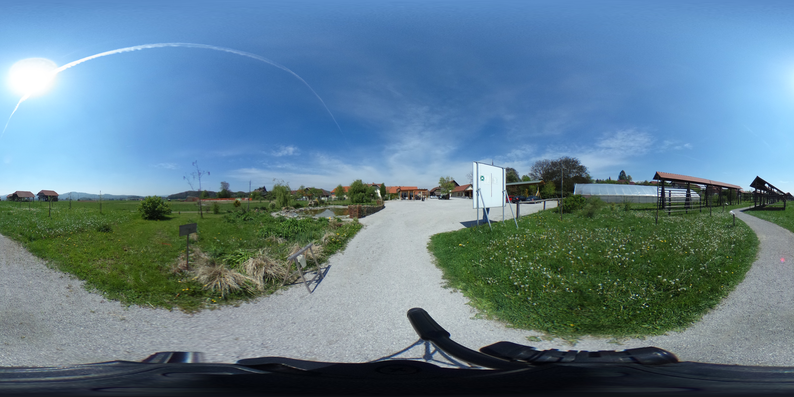
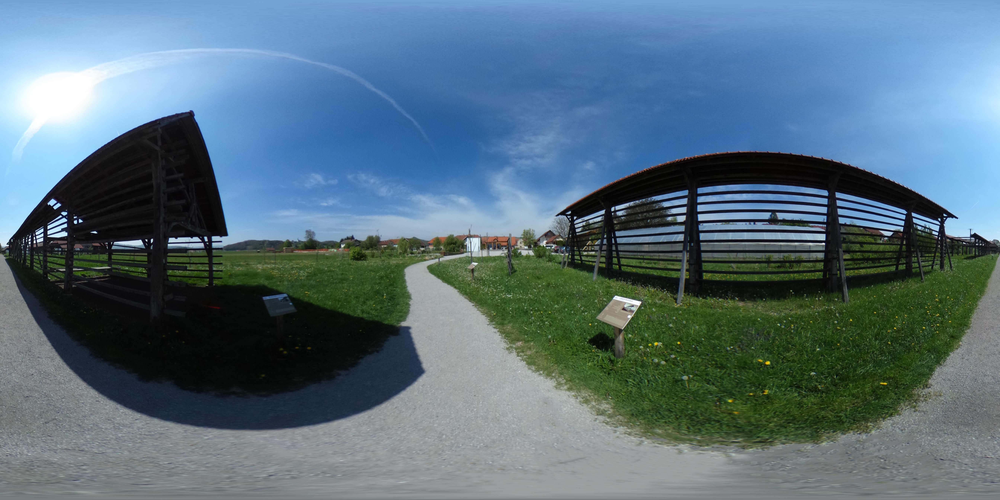

<a-scene>
  <a-assets>
    <audio id="click-sound" src="audio/click.ogg"></audio>
    <!-- Images. -->
    
    
    
    
  </a-assets>
  <!-- 360-degree image. -->
  <a-sky id="image-360" radius="10" src="#city"></a-sky>
  <!-- Link we will build. -->
  <a-entity class="link"></a-entity>
  <!-- Camera + Cursor. -->
  <a-camera>
    <a-cursor id="cursor">
      <a-animation begin="click" easing="ease-in" attribute="scale"
                   fill="backwards" from="0.1 0.1 0.1" to="1 1 1" dur="150"></a-animation>
      <a-animation begin="cursor-fusing" easing="ease-in" attribute="scale"
                   from="1 1 1" to="0.1 0.1 0.1" dur="1500"></a-animation>
    </a-cursor>
  </a-camera>
</a-scene>